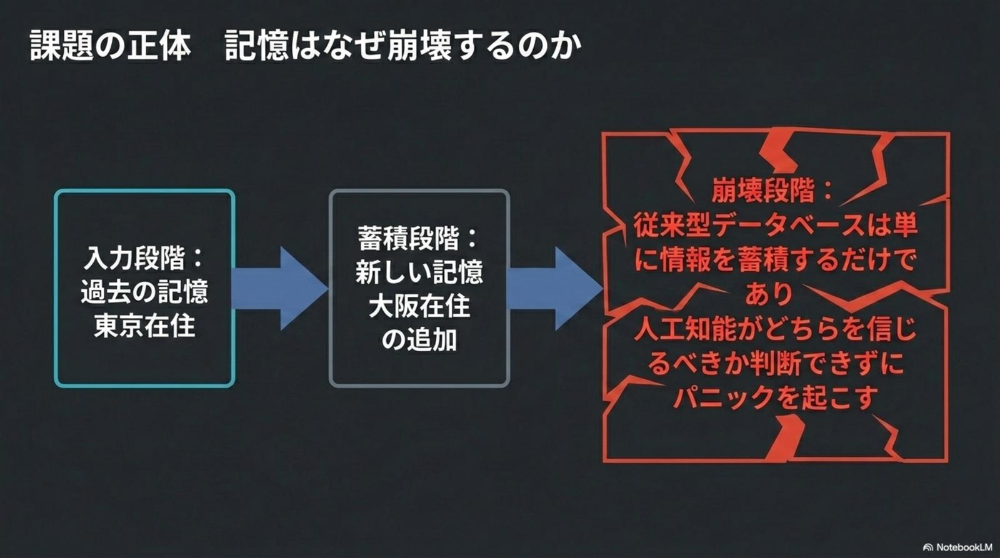
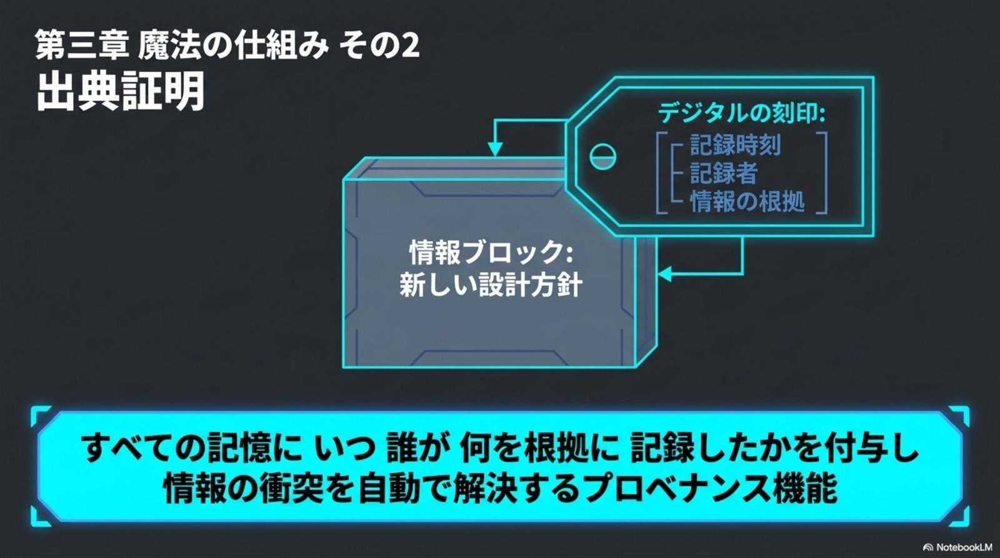
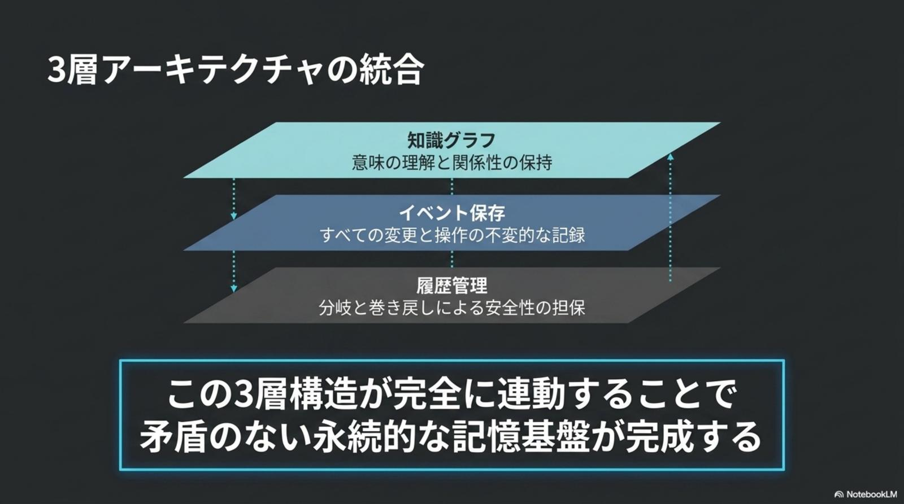
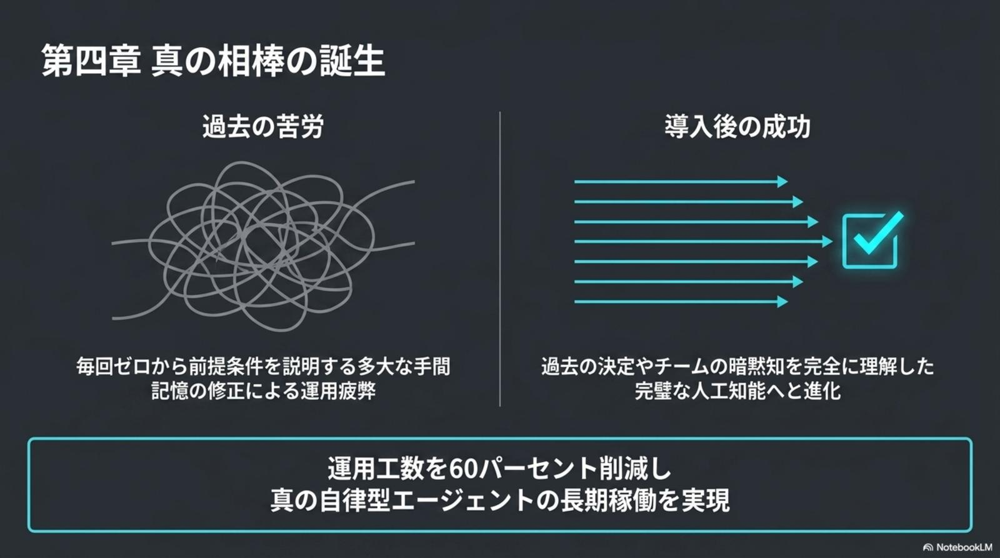

Mnemograph
AIの「記憶崩壊」を止める
— ベクトルDBの次に来た、出典証明とGit的バージョン管理を備えた知識グラフ。
長期稼働するAIエージェントを蝕む「記憶の矛盾」「出典の喪失」「ロールバック不能」という3つの壁を、知識グラフ × イベントソーシング × バージョン管理の3層構造で解決。SQLiteで完全ローカル動作、claude mcp add mnemograph でClaude Codeに即接続。運用工数60%削減を実現する、次世代エージェントメモリの標準候補。

賢いはずのAIが「バカ」になる日——記憶崩壊の正体
数週間、数ヶ月と稼働させた長期エージェントは、ある日突然奇妙な行動をとり始める。「東京から大阪に変わった」と伝えても両方の住所を信じ込み、前回決めたアーキテクチャをセッションごとに忘れる。原因はベクトルDBの構造そのものにある。

従来型ベクトルDB
- 情報は時系列なくフラットに蓄積される
- 「いつ・誰が・何を根拠に」が記録されない
- 新旧の矛盾が放置されハルシネーションの温床に
- 間違った記憶を「消す・戻す」が原理的に不可能
- 運用が長引くほど記憶が肥大化し性能劣化
Mnemograph
- ノード（事実）×エッジ（関係）の知識グラフで構造化
- 全情報に出典証明（provenance）を自動付与
- 信頼度と新しさを基準に矛盾を自動解決
git revert同様に間違った記憶を打ち消せる- 過去の任意時点へ「タイムトラベル」で巻き戻し可
3層が連動して「矛盾のない永続記憶」を生む
知識グラフ層（意味の理解）、イベント保存層（不変の操作ログ）、履歴管理層（分岐と巻き戻し）。この3つが噛み合うことで、長期運用しても破綻しない記憶基盤が初めて完成する。

Mnemographを支える4つのコア機能
「点」から「線」へ、「累積」から「証明」へ、「上書き」から「Git管理」へ——Mnemographは記憶の扱いを4段階で根底から作り直す。
Knowledge Graph
記憶を Entities × Relations × Observations の知識グラフへ。「2025年は寿司好き、2026年にヴィーガン化」など時系列・意味関係を保持。
Provenance-First
イベントソーシングで「いつ・どこから・誰が追加したか」を全情報に自動付与。AIの回答根拠を完全に追跡・監査できる。
Conflict Resolution
新旧情報が衝突したら、信頼度と新しさを基準にMnemographが自動で整理。記憶を常にクリーンな状態へ保つ。
Git-Like Versioning
revertで誤記憶を取り消し、branchで実験、過去の特定時点まで巻き戻し。コードと同じ感覚。
すべての記憶に「デジタルの刻印」を打つ
情報ブロックに対し、記録時刻 / 記録者 / 情報の根拠がタグとして自動で添付される。情報の衝突は自動で解決され、AIの判断はすべて出典まで遡れる——ハルシネーションが構造的に減るのは、この「証明可能性」が根底にあるため。

Audit-Ready by Design — 監査が「設計の前提」
すべてのメモリ書き込みは不変イベントログとして保存される。「なぜAIがそう答えたか」を後から完全再現でき、規制業界（金融・医療・公共）でのエージェント実運用を初めて監査可能な水準に押し上げる。事故時には該当イベントだけを安全に取り消せる。
記憶が「育つ」長期エージェントの1日
朝の問い合わせ、昼のコード会話、夜の振り返り——セッションを跨いでも文脈は失われず、矛盾は自動で解消される。「毎回ゼロから説明する」消耗から、ついに解放される。
顧客対応AI——過去の会話と矛盾しない完璧な応対
住所変更・契約変更などライフイベントを、graph.update でノード差し替え。古い住所と新しい住所が混在することがなく、人手の修正・運用工数を 60%削減。
コーディング相棒——セッションを跨いで暗黙知を共有
「このAPIは認証が古い形式」「リファクタは段階的に」といったプロジェクトの暗黙知を長期記憶に保持。新セッションでもゼロからの再説明が不要に。
衝突の自動解消
古い仕様書と新しい仕様書を同時に取り込んでも、Mnemographが信頼度・タイムスタンプ・出典でランク付けしてクリーンな状態を維持。手動マージは不要。
記憶を「先週月曜」に巻き戻す
エージェントが間違った学習をした疑いがあれば、git checkout 同様に過去スナップショットへ復帰。原因の切り分けと再現が可能になり、デバッグ工数が激減。
RAG / ベクトルDC との立ち位置
既存のRAG（ベクトルDB）は「検索の補助線」、Mnemographは「永続的な記憶基盤」。両者は競合ではなく、エージェントスタックで併用される共生関係に近い。
| 項目 | 従来型RAG (ベクトルDB) | Mnemograph |
|---|---|---|
| 記憶の単位 | 文書のembedding | 知識グラフ + 出典証明 |
| 矛盾への対処 | 放置（ハルシネーション源） | 信頼度ベースで自動解決 |
| 履歴管理 | なし | Gitによる完全管理 (revert / branch) |
| 信頼性 | 高 (ハルシネーション残存) | 監査可能 (出典まで遡れる) |
| 運用コスト | 長期化で多大な運用 | 自動整理で約60%削減 |
| ストレージ | クラウドベクトルDB依存 | SQLite — 完全ローカル / $0 |
真の「相棒」の誕生——導入後に何が変わるか
「過去の決定」と「チームの暗黙知」を完全に理解した、長期稼働する真の自律型エージェント。導入企業は運用工数60%削減を実現している。

5分で導入できる未来のメモリ
SQLiteベースで完全ローカル動作。クラウド費用ゼロ・データ流出ゼロ。Claude Codeならclaude mcp add 1行で接続が完了する。
Install
pipで一発インストール。ランタイムはPythonのみ、追加サーバ不要。pip install mnemograph
Wire to Claude Code
MCPサーバとして登録。Claude Codeから即座に graph.add / graph.query が呼べる。
Run & Audit
記憶は~/.mnemograph/ にSQLiteで永続化。git log 同様にイベント履歴を確認可能。
採用前に押さえておきたい注意点
注目度の高い新興OSSである一方、エンタープライズ運用にはまだ評価期間が必要。以下の点は導入前に確認しておきたい。
留意すべき点
- 2026年4月公開の新興OSS — 大規模運用実績はまだ蓄積中
- SQLiteベースのため、超高並列書き込み環境はチューニング必要
- 知識グラフ設計（entityスキーマ）はチームでの合意が前提
- Embeddingベースの曖昧検索は別途RAGとの併用推奨
推奨アプローチ
- まずローカル開発のClaude Code併用で「相棒」体験を検証
- 顧客対応・社内QAなど監査価値が高い領域から本番投入
- 既存RAGは残し、Mnemographは「永続記憶層」として追加配置
revertでロールバック可能なため、フェイルセーフ運用に向く
記憶を管理し、AIを真の相棒へ進化させよう。— Mnemograph Manifesto · 2026年4月